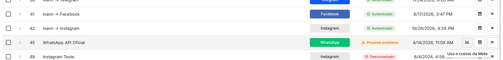
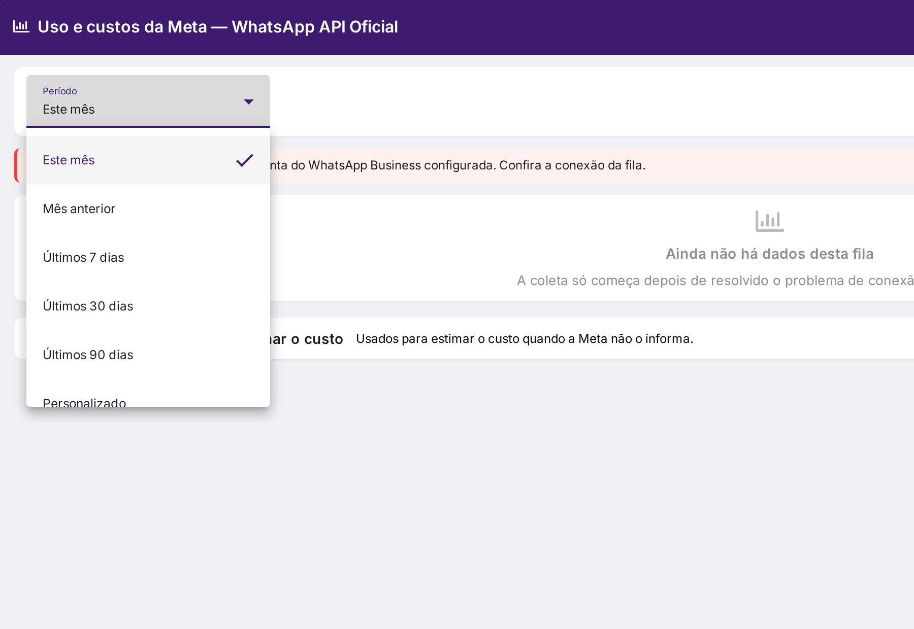
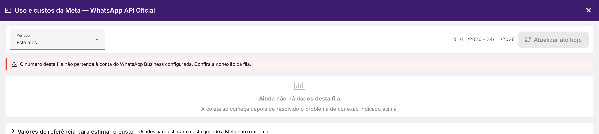
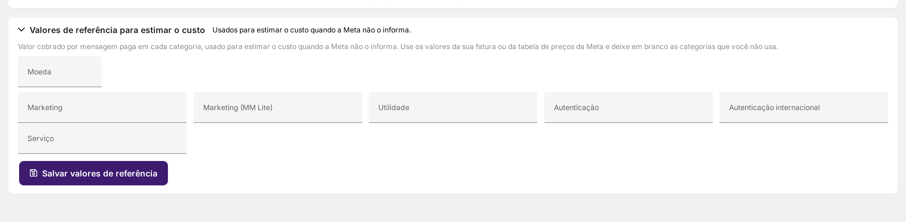

Uso e Custos da Conta WhatsApp (Meta)
O relatório por fila que mostra quanto a conta do WhatsApp Business consumiu, do que esse consumo era feito e por onde ele entrou. Serve para fechar o mês com número na mão, para achar a fila que está gastando demais e para decidir template e categoria com base em custo — não em impressão.
1. Para que serve e o que ele não é
A cobrança da Meta é por mensagem, e a maior parte do que uma operação envia é mensagem de template: lembrete, aviso de pedido, código de acesso, campanha. Quem paga a conta precisa de três respostas: quanto foi, de que categoria veio e qual fila puxou o volume. Este relatório entrega as três, fila por fila, lendo os dados direto da conta do WhatsApp Business.
Três limites precisam estar claros antes de abrir a tela:
- É orientativo. Os valores vêm da Meta, mas podem chegar com atraso e com ajuste retroativo. A tela diz isso no pé da janela: Relatório orientativo, com valores aproximados obtidos da Meta. Não substitui as informações oficiais de faturamento do Gerenciador do WhatsApp da Meta.
- É por fila, não por conta. Uma conta do WhatsApp Business pode alimentar vários números. O relatório mostra o que aquela fila originou; para o total da conta, some as filas ou leia o Gerenciador.
- Precisa de coleta. Nada aparece antes da primeira coleta da fila. A rotina automática roda de madrugada; a primeira leitura de uma fila recém-conectada costuma exigir o botão Coletar agora.
2. Onde abrir
A tela fica na lista de filas, em Configurações › Filas. A coluna Funções de cada linha traz o ícone de gráfico com a dica Uso e custos da Meta.
O botão existe apenas nas filas de WhatsApp Cloud API — as duas modalidades: WA Cloud API (Dev App) e WA Cloud API (Tech Provider). Filas de outros canais (WAMD, WebChat, Telegram, e-mail, Instagram) não exibem o ícone, porque não têm cobrança de mensagem na Meta. Se o ícone não aparece em uma fila de WhatsApp, confira primeiro o tipo da fila: uma fila antiga conectada por outro método não tem esse dado.

A janela abre sobre a própria lista, larga e alta, e fecha com o X no canto. O filtro e a rolagem da grade continuam como estavam.
3. Período
O seletor de período abre com Este mês. As opções e o intervalo que cada uma monta:
| Opção | Intervalo |
|---|---|
| Este mês | Do dia 1º até hoje. |
| Mês anterior | O mês fechado anterior, do primeiro ao último dia. |
| Últimos 7 dias | De seis dias atrás até hoje. |
| Últimos 30 dias | De 29 dias atrás até hoje. |
| Últimos 90 dias | De 89 dias atrás até hoje. |
| Personalizado | Duas datas escolhidas à mão, aplicadas com o botão Aplicar. |
No modo personalizado valem três regras: as duas datas são obrigatórias; a data inicial não pode ser posterior à final; e o intervalo não pode passar de 366 dias — quem tenta recebe O período pode ter no máximo 366 dias. O limite não é capricho: a origem das mensagens é calculada mensagem a mensagem e um recorte longo demais estoura o tempo de resposta.
Ao lado do período aparece o intervalo efetivo (por exemplo 01/11/2026 – 24/11/2026) e, quando a data final ficou no passado, o atalho Atualizar até hoje, que estica o fim do recorte sem mexer no início.

4. Como os dados chegam
A coleta é automática e roda de madrugada, trazendo os dados até o dia anterior. O rodapé da janela mostra o carimbo Dados até dd/mm — é a data que você deve citar em qualquer conversa sobre número.
Dois detalhes explicam leituras que parecem erradas:
- A Meta ainda ajusta os últimos 3 dias. Os números recentes podem subir ou descer na coleta seguinte. Fechamento de mês sério espera dois ou três dias.
- Hoje é parcial. O dia corrente só aparece completo depois da coleta do dia seguinte.
Quando não se quer esperar a madrugada, o botão Coletar agora dispara a coleta na hora. Enquanto ela roda, a janela mostra Buscando na Meta… e consulta o andamento a cada poucos segundos por até quinze minutos. O aviso da própria tela é literal: Pode levar alguns minutos. Você pode fechar esta janela: a busca continua e o relatório mostra os dados novos quando você voltar. Fechar não cancela nada.
5. Quando não há dados: o que cada aviso significa
Um relatório vazio não é um relatório zerado. A tela distingue “não consegui falar com a Meta” de “a Meta respondeu e não houve cobrança”. Os avisos e o que fazer:
| Situação na tela | O que aconteceu | Ação |
|---|---|---|
| A Meta recusou o acesso desta fila (token expirado ou revogado) | O token da conexão não vale mais. | Reconectar a fila. Nenhuma coleta acontece até isso ser resolvido. |
| O acesso desta fila não tem permissão para ler o uso da conta | A conexão foi autorizada sem a permissão de gerenciamento da conta do WhatsApp Business. | Reconectar concedendo a permissão de gerenciamento. |
| A conta do WhatsApp Business desta fila não foi encontrada na Meta | A conta referenciada não existe mais ou está inacessível para o token. | Conferir a conexão da fila e a conta correta no Gerenciador. |
| O número desta fila não pertence à conta do WhatsApp Business configurada | O número e a conta não batem. | Conferir a conexão. É o aviso mais comum em fila remontada com número de outra conta. |
| Ainda não há dados desta fila + A primeira coleta acontece automaticamente na madrugada | Fila conectada e sem coleta ainda. | Usar Coletar agora se o número for urgente. |
| A coleta só começa depois de resolvido o problema de conexão indicado acima | Há um aviso de conexão na própria janela. | Resolver o aviso primeiro; o botão de coleta fica bloqueado. |
| O período é longo demais para calcular a origem das mensagens | Só o bloco de origem falhou; o resto do relatório está válido. | Reduzir o período. |

6. Resumo do período
Quatro cartões resumem o recorte. A leitura correta depende de saber o que cada um conta:
| Cartão | O que mostra | Como ler |
|---|---|---|
| Custo no período | O valor cobrado, com um selo que diz a origem do número: Informado pela Meta, Parcialmente estimado ou Estimado. | Se o selo não for “Informado pela Meta”, o valor é conta feita com os valores de referência — trate como estimativa. |
| Mensagens pagas | As mensagens que a Meta cobra, com uma linha de contexto de N entregues. | É o volume que gera custo. A dica do cartão explica: as entregues no período são a soma das pagas com as gratuitas. |
| Mensagens gratuitas | As entregues sem cobrança, quebradas por motivo (franquia de atendimento, entrada por anúncio). | Volume alto aqui é bom: atendimento dentro da janela e conversa vinda de anúncio não são cobrados. |
| Atendimentos | Quantos atendimentos a fila teve no período e o custo médio por atendimento. | É o número que interessa para o negócio: custo por conversa, não custo por mensagem. |
O selo do custo tem três leituras e a própria tela as explica:
- Informado pela Meta — a conta recebeu o custo real de tudo que foi cobrado.
- Parcialmente estimado — parte veio da Meta, parte foi calculada pelos valores de referência.
- Estimado — a Meta não informou o custo desta conta; o valor é o total de mensagens pagas multiplicado pelo valor por mensagem cadastrado.
Quando existe mensagem paga sem custo da Meta e sem valor cadastrado, a tela avisa e não maquia: Mensagens pagas fora do custo: N, seguido de Falta o valor por mensagem de …. Essas mensagens ficam fora do total. É a causa mais frequente de o painel ficar abaixo da fatura.
7. Dia a dia
O gráfico diário mostra o período dia a dia, com duas visões alternáveis: Mensagens (empilhadas por categoria) e Custo. A dica de cada coluna traz o dia, o valor e, quando a categoria tem mais de uma parcela, o total do dia.
O gráfico não junta dias: dia sem movimento fica sem coluna, e não com zero. Um vale no meio do mês costuma ser dia sem disparo de campanha, não falha de coleta — para confirmar, olhe a tabela de categorias e o carimbo de dados.
8. Mensagens e custo por categoria
A tabela cruza categoria, mensagens pagas e gratuitas. As categorias são as da Meta, com o nome traduzido na tela:
| Categoria | Nome na tela | O que entra |
|---|---|---|
| MARKETING | Marketing | Promoções, ofertas e convites enviados por template. |
| MARKETING_LITE | Marketing (MM Lite) | Variante de marketing de custo reduzido, quando a conta está habilitada a usá-la. |
| UTILITY | Utilidade | Avisos de pedido, entrega, cobrança e outras atualizações enviadas por template. |
| AUTHENTICATION | Autenticação | Códigos de verificação e de acesso. |
| AUTHENTICATION_INTERNATIONAL | Autenticação internacional | O mesmo tipo de código, com tarifa internacional. |
| SERVICE | Serviço | Respostas dentro da janela de 24 horas aberta pelo cliente. |
Use esta tabela para responder “o que puxou o custo”. Em operações de varejo o padrão é Marketing dominar o volume; quando Utilidade cresce sem o volume de pedidos crescer, quase sempre é automação disparando aviso em duplicidade.
Se uma linha aparece com volume e outra não, não conclua que a categoria não existe na conta: a tabela só lista categoria com movimento no período.
9. Quem enviou as mensagens
Este bloco responde a pergunta que o total não responde: de onde veio o tráfego da fila. As colunas são Origem, Tipo, Mensagens enviadas, % das enviadas e Custo aproximado.
O Tipo classifica a cobrança daquela origem:
- Paga — a mensagem foi cobrada.
- Franquia de atendimento — conversa dentro da janela aberta pelo cliente, sem cobrança.
- Entrada por anúncio — conversa aberta por um ponto de entrada gratuito, como anúncio com clique para o WhatsApp.
A porcentagem é sempre sobre o total de mensagens enviadas pela fila no período — não sobre as pagas. Por isso a soma das origens fecha em 100% mesmo quando boa parte é gratuita.
O custo por origem é aproximado e rateado: a tela avisa quando não consegue atribuir tudo (Não inclui o custo de …). Para rateio fino, use a tabela de categorias e o custo por template.
Este é o bloco mais caro de calcular. Ele aparece depois do resto e tem três estados próprios: Calculando a origem das mensagens…, o erro de período longo e o erro de falha. Nenhum deles invalida os cartões e as outras tabelas.
10. Templates e os insights da Meta
A tabela de templates é a mais acionável do relatório: Template, Categoria, Idioma, Enviados, Entregues, Lidos, Taxa de leitura (%), Cliques e Custo. Com ela você descobre o template que gasta e não é lido, e o que sustenta a operação.
Duas notas da própria tela mudam a leitura:
- A Meta atualiza leituras e cliques só até 7 dias após o envio. Template antigo não “perde” leitura: ele deixa de ser atualizado. Taxa de leitura de campanha velha é número congelado, não desempenho atual.
- Sem insights habilitados, a conta pode não informar custo por template. Aí a tabela traz os volumes e o aviso A Meta não informa o custo por template desta conta.
Os insights são o recurso da Meta que libera enviados, entregues, lidos, cliques e custo por template. Sem eles, esse bloco fica limitado. Habilitar é decisão de administrador e tem consequências que a tela apresenta antes de qualquer clique:
- É irreversível. Depois de habilitados, os insights não podem ser desligados.
- Vale para a conta inteira, não só para a fila que está aberta.
- A Meta passa a rastrear os cliques nos links das mensagens e a usar dados anonimizados das conversas.
- Os dados aparecem a partir da próxima coleta — habilitar não preenche o passado.
Quem não é administrador vê o aviso Peça a um administrador para habilitar os insights e o botão desabilitado. A confirmação exige marcar Entendo que esta ação não pode ser desfeita e só então libera Habilitar insights definitivamente.
A tabela de templates pode ser exportada para Excel a partir da própria janela, com o nome do arquivo carregando o identificador da fila e o intervalo do período — útil para anexar ao fechamento.
11. Por país e Tráfego geral
O bloco de detalhe tem duas visões, País e Tráfego geral. A primeira abre pagas, gratuitas e custo por país de destino — serve para detectar DDI errado em cadastro, que gera tarifa internacional sem ninguém notar.
A segunda é a que costuma gerar dúvida, e a própria tela se antecipa: a Contagem geral do número vem de outro relatório da Meta, com outros critérios, e inclui mensagens que não entram na cobrança, como as recebidas dos clientes. Por isso ela nunca fecha com o resumo de pagas e gratuitas, e isso não é erro de soma.
Regra prática: para custo e volume cobrado, use os cartões e as categorias; para dimensionar o movimento do número, use o tráfego geral. Não misture os dois no mesmo relatório.
12. Valores de referência
É o cadastro que permite estimar custo quando a Meta não informa o valor. Você informa a moeda e quanto custa uma mensagem paga em cada categoria; categorias que a operação não usa ficam em branco.
| Campo | Regra |
|---|---|
| Moeda | Código de três letras, como USD ou BRL. O campo aceita só letras e corta em três posições. |
| Marketing | Valor por mensagem paga desta categoria. |
| Marketing (MM Lite) | Idem, para a variante de custo reduzido. |
| Utilidade | Idem. |
| Autenticação | Idem. |
| Autenticação internacional | Idem. |
| Serviço | Idem. |
Três avisos guiam o preenchimento: Somente administradores podem alterar os valores de referência; a data do último salvamento aparece como Atualizado em …; e, quando há volume pago sem valor naquela categoria, aparece Há mensagens pagas sem valor nesta categoria — é o convite para completar o cadastro.
O efeito prático é direto: enquanto faltar valor, o custo daquelas mensagens fica fora do total e o selo do cartão muda para Parcialmente estimado. Preencher com os valores da própria fatura resolve a estimativa sem inventar tarifa.

13. Fechamento mensal: exemplo completo
Cenário: operação com três filas de WhatsApp Cloud API, fechamento do mês anterior, moeda USD. Os números abaixo são de exemplo, para mostrar a mecânica.
- Abra cada fila com o mesmo período. Selecione Mês anterior nas três. Anote o carimbo Dados até de cada uma — se uma delas estiver um dia atrás das outras, o fechamento fica torto.
- Anote os quatro cartões por fila. Na fila principal do exemplo: 12.480 mensagens pagas, 8.320 gratuitas, 20.800 entregues (12.480 + 8.320), 1.120 atendimentos e custo de US$ 154,75 com selo Informado pela Meta.
- Confira o custo por atendimento. 154,75 ÷ 1.120 = 0,1382, ou seja, cerca de 14 centavos de dólar por atendimento. Esse é o número que se leva para a diretoria; o custo por mensagem não diz nada sozinho.
- Olhe as categorias. Se Marketing responde por 9.120 das 12.480 pagas (73,1% do volume pago), o custo é uma decisão de campanha — cortar lembrete de utilidade não resolve.
- Verifique as mensagens fora do custo. Se o rodapé do cartão de custo apontar Mensagens pagas fora do custo: 940, essas mensagens não entraram no total. Com valor de Utilidade a US$ 0,008, elas representam 940 × 0,008 = US$ 7,52.
- Feche com a estimativa corrigida. 154,75 + 7,52 = US$ 162,27 como valor provável do período.
- Compare com a fatura. Fatura do Gerenciador: US$ 161,20. A diferença de 1,07 é ruído de arredondamento e do ajuste dos últimos dias — dentro do esperado. Diferença grande e sistemática é cadastro faltando ou fila não somada.
- Guarde a evidência. Exporte a tabela de templates de cada fila e anexe ao fechamento com o período e o carimbo de dados. Sem isso, o número não é reproduzível três meses depois.
14. Os mesmos números pela API
A janela conversa com o backend por um conjunto pequeno de rotas. Todas exigem sessão autenticada e recebem a fila por queueId:
| Rota | Método | Parâmetros | Para que serve |
|---|---|---|---|
/metausage/report | GET | queueId, from, to (AAAA-MM-DD) | Relatório do período: totais, categorias, dias, países e o estado da coleta. |
/metausage/origins | GET | queueId, from, to | Origem das mensagens enviadas, com tipo de cobrança e custo aproximado. |
/metausage/prices | GET | queueId | Valores de referência cadastrados e a data do último salvamento. |
/metausage/prices | PUT | queueId, currency, rates | Grava os valores por categoria. Restrito a administrador. |
/metausage/status | GET | queueId | Andamento da coleta, usada pela janela enquanto a busca roda. |
/metausage/refresh | POST | queueId | Dispara a coleta imediata (o Coletar agora). |
/metausage/enableInsights | POST | queueId | Habilita os insights na conta do WhatsApp Business. Irreversível. |
O relatório devolve ainda o bloco de sincronização com o estado da fila (status, running, lastRunAt, lastOkAt, lastManualAt, syncedThrough, insightsEnabled, costAvailable, currency, waba, phone). É esse bloco que decide o aviso exibido — vale checá-lo antes de automatizar qualquer leitura.
Quem consome esses dados por integração deve tratar dois casos que a tela trata: coleta bloqueada (o número não cresce porque nada foi coletado) e custo parcial (o total é estimativa). Somar os dois sem ler o estado produz relatório financeiro errado.
15. Perguntas frequentes
O total do painel fica abaixo da fatura. Está errado?
Provavelmente não. Verifique o aviso de mensagens pagas fora do custo: mensagem paga sem custo da Meta e sem valor de referência cadastrado não entra no total. Complete os valores de referência e o número se aproxima. Se a diferença persistir e for grande, confira se há outra fila usando o mesmo número.
Por que as entregues não batem com a soma das pagas e gratuitas?
Nessa tela elas batem por definição: entregues é pagas mais gratuitas. Quando o número não fecha é porque um dos lados é de outro bloco — normalmente a Contagem geral do número, no tráfego geral, que inclui mensagens recebidas dos clientes e usa outros critérios.
O custo de hoje está menor do que o real
Sim, e é esperado. A coleta automática traz dados até o dia anterior, e os últimos três dias ainda podem ser ajustados pela Meta. Para um número de hoje, use Coletar agora e leia sabendo que ele é parcial.
Não vejo o ícone de uso e custos na minha fila
O recurso existe para filas de WhatsApp Cloud API, nas modalidades Dev App e Tech Provider. Uma fila conectada por outro método não tem esse dado na Meta. Confira o tipo da fila na própria lista antes de procurar o botão.
Posso desligar os insights depois de habilitar?
Não. A habilitação é definitiva e vale para a conta do WhatsApp Business inteira, não só para a fila. Ela também muda o comportamento do lado da Meta: passa a rastrear cliques nos links das mensagens e a usar dados anonimizados das conversas. Decida com essa informação na mão.
A taxa de leitura de um template antigo caiu
Ela não cai — ela para de ser atualizada. A Meta atualiza leituras e cliques só até 7 dias após o envio. Número de campanha antiga é fotografia, não tendência.
Por que a origem das mensagens não carrega?
Esse bloco é calculado mensagem a mensagem e é o mais pesado do relatório. Em período longo a tela desiste e pede um recorte menor; em falha de rede, mostra erro só nesse bloco. Os cartões e as outras tabelas continuam válidos.
Os valores de referência mudam a fatura?
Não. Eles servem apenas para estimar, dentro da plataforma, o custo que a Meta não informou. A cobrança real é sempre da Meta, e a única fonte oficial é o Gerenciador do WhatsApp.
16. Checklist de leitura
- Confirmar o tipo da fila: só Cloud API tem esse relatório.
- Ler o aviso de conexão antes de qualquer número.
- Anotar o carimbo Dados até e o intervalo efetivo do período.
- Olhar o selo do custo: informado, parcial ou estimado.
- Conferir o aviso de mensagens pagas fora do custo antes de comparar com a fatura.
- Separar categoria (o que custou) de origem (de onde veio) — são perguntas diferentes.
- Não usar taxa de leitura de template com mais de 7 dias como desempenho atual.
- Fechar o mês com o mesmo recorte e o mesmo conjunto de filas, sempre com exportação anexada.